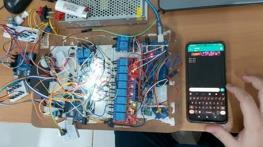
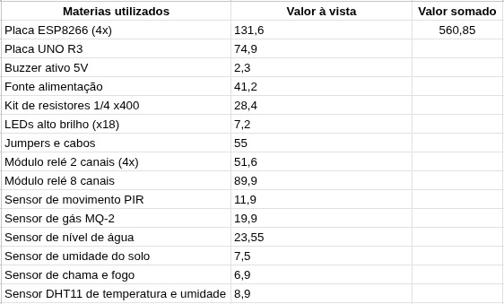
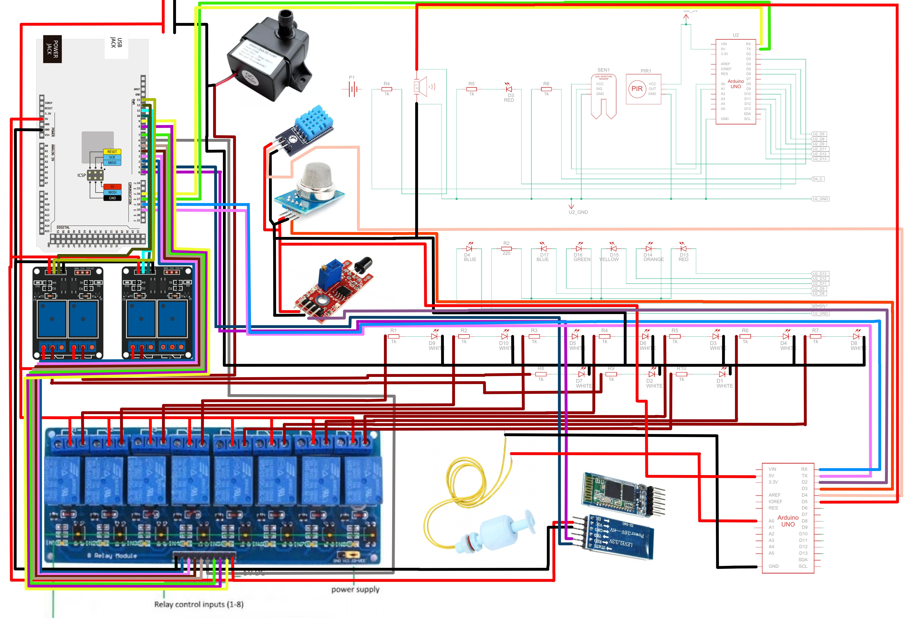

O projeto Domótica Acessível propõe um sistema de automação residencial de baixo custo, desenvolvido com hardware livre e componentes reutilizáveis. Seu objetivo é tornar a automação doméstica acessível, sustentável e adaptável a diferentes contextos — desde residências populares até ambientes educacionais. A proposta nasceu no Instituto Federal de Mato Grosso do Sul (IFMS) e combina Arduino, ESP8266 e integração com Alexa, criando um ambiente inteligente que pode ser controlado por voz, aplicativo móvel ou sensores ambientais. Mais do que uma maquete funcional, o projeto representa uma plataforma aberta de aprendizado e inclusão tecnológica, incentivando o uso da robótica e da Internet das Coisas (IoT) em espaços educacionais e comunitários.
O sistema utiliza dois módulos ESP8266 conectados via Wi-Fi que se comunicam com um dispositivo Alexa Echo Dot e com o aplicativo Alexa no celular. Por meio de comandos de voz, o usuário pode ligar ou desligar luzes, acionar sistemas de irrigação, abrir portões ou monitorar o ambiente. - Conexão local: funciona apenas quando a Alexa e a maquete estão na mesma rede Wi-Fi. - Protocolo HTTP: garante comunicação estável e rápida. - Acessibilidade: comandos de voz facilitam o uso por pessoas idosas ou com deficiência motora. - Interface intuitiva: o aplicativo exibe o status dos dispositivos e permite controle manual. Durante os testes, o sistema apresentou tempo médio de resposta entre 0,9 e 1,3 segundos, com 97,8% de taxa de sucesso na execução de comandos — desempenho comparável a sistemas comerciais, porém com custo até 80% menor.
O projeto alia tecnologia, sustentabilidade e inclusão, permitindo que qualquer pessoa possa automatizar ambientes de forma econômica e educativa. Ele pode ser implementado em casas populares, áreas rurais ou escolas técnicas, servindo como ferramenta de ensino interdisciplinar em programação, eletrônica e IoT. Além de reduzir custos e consumo energético, o sistema incentiva a formação de cidadãos tecnologicamente conscientes, contribuindo para o avanço da educação tecnológica no Brasil.
Matheus Dakan Batista Bento
Instituto Federal de Mato Grosso do Sul (IFMS) - Campus Dourados
Email: matheus.bento@estudante.ifms.edu.br
Jónison Almeida dos Santos
Instituto Federal de Mato Grosso do Sul (IFMS) - Campus Dourados
Email: jonison.santos@ifms.edu.br
Aqui você encontrará um exemplo de código que foi utilizado no projeto.
// Exemplo de código em Arduino
#include
#ifdef ESP32
#include
// Se fosse ESP32, troque pelos GPIOs desejados
#define RELAY_PINS {12, 14, 27, 26, 25, 33, 32, 15}
#else
#include
// ESP8266 NodeMCU -> D1 a D8
#define RELAY_PINS {5, 4, 0, 2, 14, 12, 13, 15}
// D1=5, D2=4, D3=0, D4=2, D5=14, D6=12, D7=13, D8=15
#endif
#include "fauxmoESP.h"
#define SERIAL_BAUDRATE 115200
#define WIFI_SSID "Am2"
#define WIFI_PASS "cityUmori123"
// Nomes dos dispositivos Alexa (LED 9 até LED 16)
const char* lampNames[8] = {
"LED 9",
"LED 10",
"LED 11",
"LED 12",
"LED 13",
"LED 14",
"LED 15",
"LED 16"
};
// Pinos dos relés
const int relayPins[8] = RELAY_PINS;
fauxmoESP fauxmo;
// --- Configuração do Wi-Fi ---
void wifiSetup() {
WiFi.mode(WIFI_STA);
Serial.printf("[WIFI] Conectando a %s ", WIFI_SSID);
WiFi.begin(WIFI_SSID, WIFI_PASS);
while (WiFi.status() != WL_CONNECTED) {
Serial.print(".");
delay(100);
}
Serial.println();
Serial.printf("[WIFI] Conectado! SSID: %s, IP: %s\n",
WiFi.SSID().c_str(),
WiFi.localIP().toString().c_str());
}
void setup() {
Serial.begin(SERIAL_BAUDRATE);
Serial.println();
wifiSetup();
// Configura os 8 pinos como saída
for (int i = 0; i < 8; i++) {
pinMode(relayPins[i], OUTPUT);
digitalWrite(relayPins[i], LOW); // desliga todos no início
}
// fauxmo config
fauxmo.createServer(true);
fauxmo.setPort(80);
fauxmo.enable(true);
// Adiciona os 8 dispositivos
for (int i = 0; i < 8; i++) {
fauxmo.addDevice(lampNames[i]);
}
// Callback de estado
fauxmo.onSetState([](unsigned char device_id, const char * device_name, bool state, unsigned char value) {
Serial.printf("[MAIN] Device #%d (%s) state: %s value: %d\n",
device_id, device_name, state ? "ON" : "OFF", value);
for (int i = 0; i < 8; i++) {
if (strcmp(device_name, lampNames[i]) == 0) {
Serial.printf("Relay %d switched by Alexa\n", i + 9); // agora começa no 9
digitalWrite(relayPins[i], state ? LOW : HIGH);
}
}
});
}
void loop() {
fauxmo.handle();
static unsigned long last = millis();
if (millis() - last > 5000) {
last = millis();
Serial.printf("[MAIN] Free heap: %d bytes\n", ESP.getFreeHeap());
}
}
Para tornar o projeto acessível, utilizamos componentes de baixo custo. Abaixo está uma lista dos principais componentes utilizados e seus respectivos preços.
| Materiais Utilizados | Valor à Vista (R$) | Valor Somado (R$) |
|---|---|---|
| Placa ESP8266 (4x) | 131,60 | 560,85 |
| Placa UNO R3 | 74,90 | |
| Buzzer ativo 5V | 2,30 | |
| Fonte de alimentação | 41,20 | |
| Kit de resistores 1/4W x400 | 28,40 | |
| LEDs alto brilho (x18) | 7,20 | |
| Jumpers e cabos | 55,00 | |
| Módulo relé 2 canais (4x) | 51,60 | |
| Módulo relé 8 canais | 89,90 | |
| Sensor de movimento PIR | 11,90 | |
| Sensor de gás MQ-2 | 19,90 | |
| Sensor de nível de água | 23,55 | |
| Sensor de umidade do solo | 7,50 | |
| Sensor de chama e fogo | 6,90 | |
| Sensor DHT11 de temperatura e umidade | 8,90 |
Encontre mídias sobre a instalação, manutenção e uso de sistemas de automação residencial utilizando hardware livre nos links a seguir:
Aqui está uma imagem da elétrica da casa automatizada:
Aqui está uma tabela dos custos da maquete:
Aqui está um diagrama da casa automatizada:
Se você tiver dúvidas ou quiser saber mais sobre o projeto, entre em contato conosco:
Email: jonison.santos@ifms.edu.br ou matheus.bento@estudante.ifms.edu.br
Instagram: @gato__vesgo